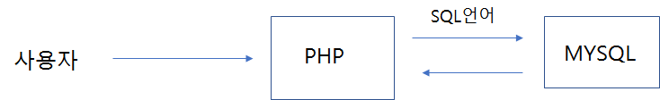

MySQL은 가장 많이 사용을 하는 관계형 데이터 베이스 시스템입니다. 또한 수많은 언어 들과 연결 인터페이스를 통하여 데이터 처리 작업을 할 수 있습니다. 그중 MySQL과 가 장 밀접하게 긴 시간 동안 궁합을 맞추어 왔던 언어가 바로 PHP입니다. PHP는 가장 많 은 MySQL 접속 처리 환경과 기능을 보유하고 있습니다. MySQL 또한 웹 활성화와 PHP 언어의 성장에 힘입어 지금의 유명세를 얻는 데 많은 도움을 받았습니다.
PHP를 이용한 데이터베이스 연동 프로그램들은 3단계의 접속 및 처리 구조를 가지고 있 습니다. 먼저 사용자는 PHP 프로그램으로 접속을 합니다.

두 번째로 접속된 PHP는 데이터를 처리하기 위해서 MySQL 시스템에 연결하며 데이터 처리를 위한 SQL 명령문을 전달합니다. MySQL은 PHP로부터 전달받은 SQL 명령문을 해석합니다. 만일 반환되는 데이터가 있을 경우에 데이터를 PHP로 전달합니다. 세 번째 로 PHP는 MySQL과 연동 및 처리가 완료된 데이터를 사용자에게 보기 좋게 가공하여 화 면을 출력합니다.
기존의 MySQL의 콘솔 작업들은 직접 DB 시스템에 접속하여 SQL 실행 명령을 처리하 는 것이었습니다. 하지만 이러한 직접적인 데이터 처리는 일반적으로 관리자가 오류 데이 터를 검색하거나 직접 수정할 때를 제외하고는 사용하지 않습니다. 데이터베이스 작업은 PHP와 같은 외부 언어를 통하여 프로그래밍하고, 접근하여 데이터를 처리 반환합니다.
데이터베이스의 SQL 명령어 또한 PHP를 통하여 동적 생성하게 하고, 이를 MySQL 데 이터베이스에 전달하여 실행하게 됩니다. 이러한 연동 작업을 DB 프로그래밍이라고 합니다.